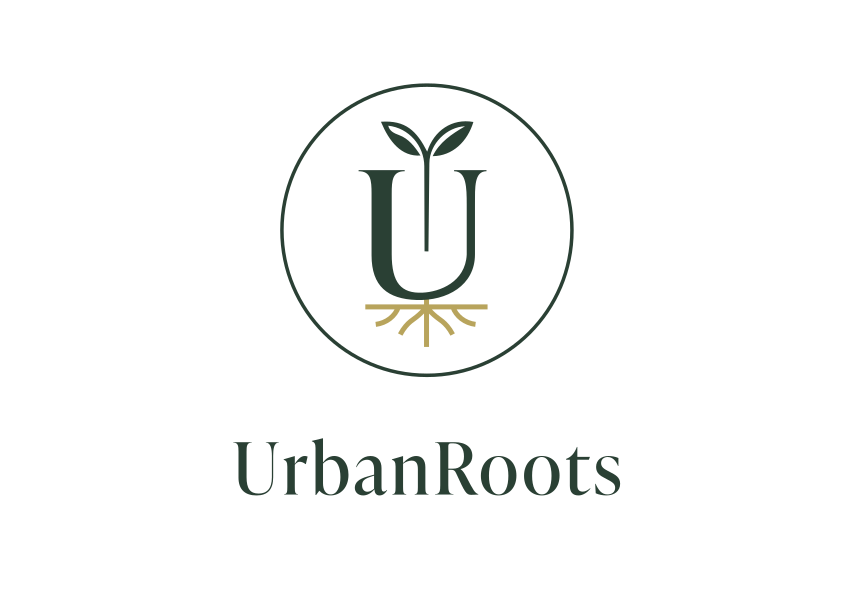

Urban and design-conscious
Urban professionals with busy schedules, high quality expectations and an interest in interior design, sustainability and smart living.
Case Study · Branding & Brand Positioning · Fictional Brand · AI-assisted visuals
For UrbanRoots, I developed the brand positioning, visual identity and a conversion-focused landing page for a fictional SmartGarden.


Initial situation
The SmartGarden combines hydroponics, app control and automated plant growth.
For a design-conscious target audience, technical functionality alone is not enough. The product needed to be positioned so it fits naturally into modern, premium living spaces.
Functional and technical, and easily perceived as a conventional gardening device.
Aesthetic, premium, sustainable and suited to modern interiors.
02 · Positioning
Urban professionals with busy schedules, high quality expectations and an interest in interior design, sustainability and smart living.
Fresh herbs and conscious living are appealing. Traditional plant care often does not fit into a busy everyday life.
An almost automated SmartGarden that combines functional value with a premium interior aesthetic.
Convenience + Design + Sustainability instead of price competition.
03 · Brand identity
The positioning led to a brand system that does not treat nature and smart living as opposites, but deliberately connects them.

The stylised U combines the brand name with the shape of a planter. Leaves represent growth and nature, while the roots reference origin, sustainability and a connection to the natural world.
04 · Visual system
The imagery shows bright interiors, natural materials and everyday situations. This makes the SmartGarden feel like a natural part of a modern kitchen.
05 · Benefit communication
Plants grow without conventional soil.
Cleaner, simpler growing directly in the kitchen.
Lighting and care are controlled intelligently.
Fewer care mistakes and less day-to-day effort.
Wood, metal and recycled materials.
The product fits naturally into premium interiors.
06 · Landing Page Concept
Positioning, benefit communication and visual identity come together in a conversion-focused landing page.

From the lifestyle-led hero section and benefit messaging to trust elements and the final purchase CTA.
Product and lifestyle in the hero.
Interior setting and target-audience fit.
PAS-based benefit communication.
Warranty, materials and social proof.
Price and a clear final CTA.
Brand Positioning
Target Audience Development
Brand Identity
Logo & Colour Palette
Brand Voice
Landing Page Concept
Copywriting
Visual Design
Content Strategy · Instagram & SEO · Brand Monitoring · Crisis Communication